Nuestras recomendaciones de bicicletas
Descubre nuestra selección de bicicletas de todas las categorías, desde bicicletas de montaña hasta modelos urbanos y eléctricos. Todas ellas cuidadosamente elegidas de las mejores marcas del mercado.
🏔️ Bicicletas de Montaña
Scott Spark 970
Bicicleta de montaña XC de doble suspensión (full suspension) con cuadro ligero de carbono, pensada para cross-country exigente. Equilibrio entre peso y control, adecuada para competición y senderos técnicos.
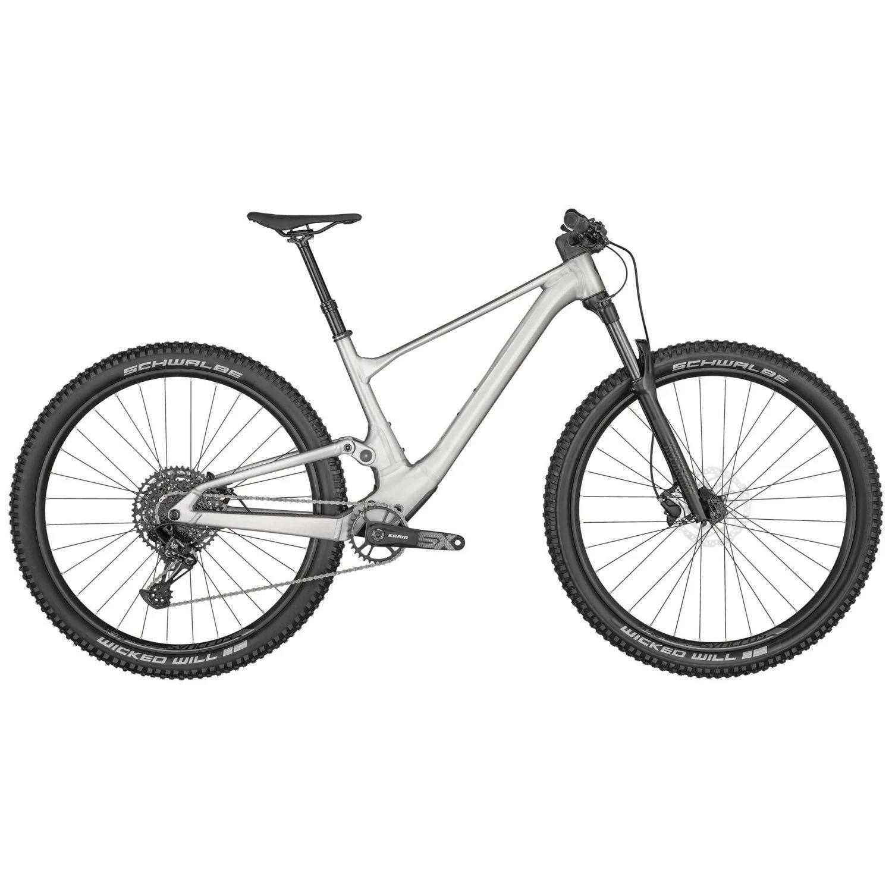
Trek Marlin 8
Mountain bike versátil con cuadro de aluminio y suspensión frontal de 100mm, pensada para rutas y senderos moderados. Perfecta para principiantes y ciclistas recreativos; incluye frenos de disco hidráulicos y componentes orientados a la durabilidad.
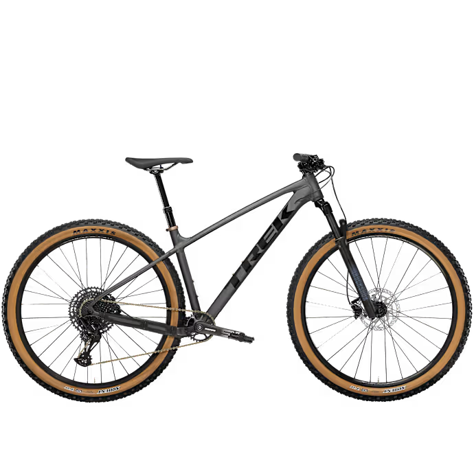
Specialized Stumpjumper Expert
Mountain bike de doble suspensión orientada al trail. Cuadro de carbono, sistemas de amortiguación ajustables y geometría pensada para maniobrabilidad en bajadas técnicas y eficiencia en subidas.
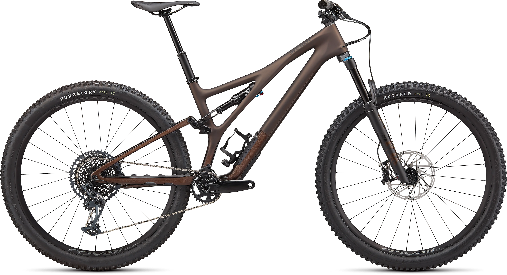
Orbea Occam H10
Mountain bike de doble suspensión con geometría trail; disponible en especificaciones que incluyen cuadro de aluminio o carbono según versión. Componentes Shimano de calidad y recorrido pensado para senderos exigentes.
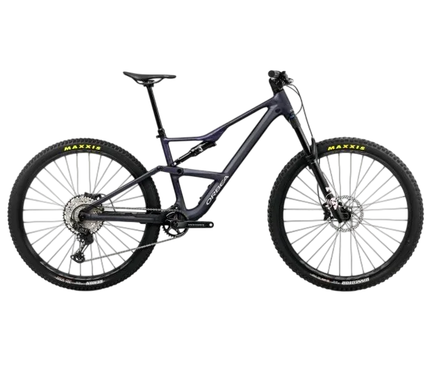
🚴 Bicicletas de Carretera
Giant TCR Advanced Pro
Bicicleta de carretera ultraligera con cuadro de carbono y enfoque en rendimiento. Las versiones Advanced Pro montan transmisiones de alta gama (dependiendo de la especificación puede incluir grupos Shimano Ultegra o Dura-Ace). Diseñada para velocidad en ruta y competiciones.
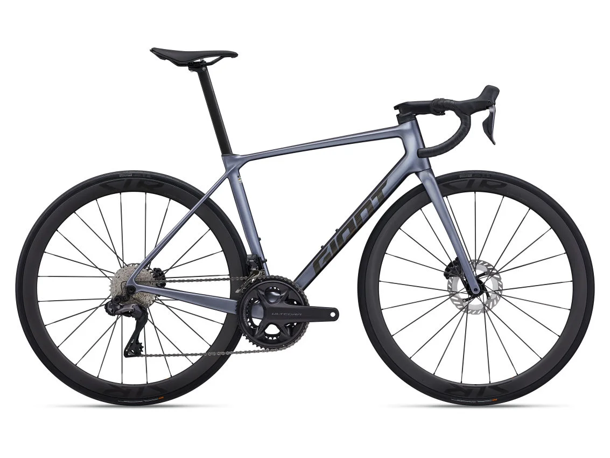
Specialized Tarmac SL7 Sport
Versión Sport del Tarmac SL7 con cuadro de carbono y grupo Shimano 105 en la especificación enlazada. Ofrece un buen equilibrio entre aerodinámica y ligereza, orientada a ciclistas que buscan rendimiento con una relación calidad-precio ajustada.
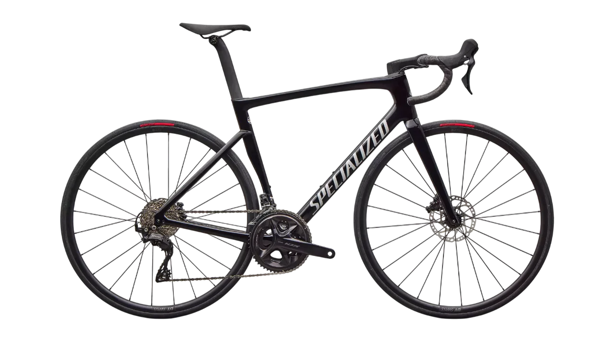
Trek Domane+ SLR 6
Versión eléctrica de la línea Domane (Domane+), con cuadro de carbono orientado al confort en largas distancias y asistencia al pedaleo integrada. Es una e-road diseñada para rutas largas y comodidad; la transmisión y componentes exactos dependen de la especificación seleccionada.
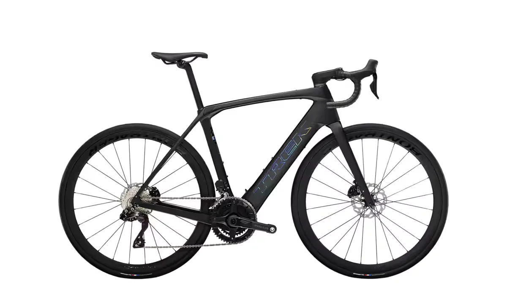
Cannondale SuperSix Evo
Bicicleta de carretera con tecnología Smartbar y geometría optimizada para comodidad y velocidad. Cuadro de carbono con amortiguación integrada.
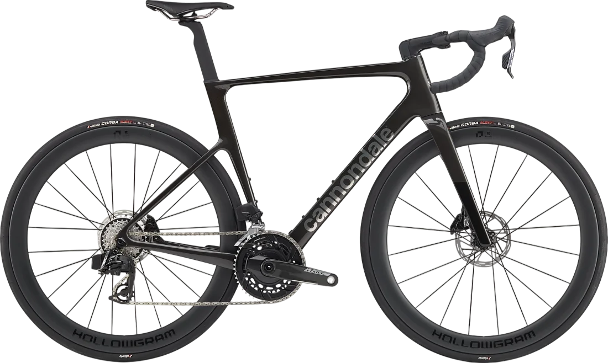
🏙️ Bicicletas Urbanas
Giant Escape 3
Bicicleta urbana y de fitness con cuadro ALUXX de aluminio, geometría cómoda y compatibilidad para portaequipajes y guardabarros. Versátil para desplazamientos diarios y salidas de fin de semana.
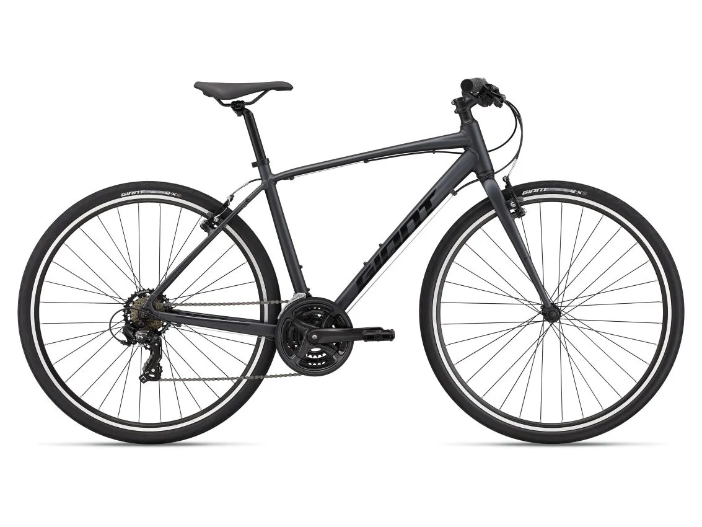
Specialized Sirrus X 3.0
Bicicleta urbana/híbrida de alto rendimiento con neumáticos de mayor volumen, transmisión 1x y frenos hidráulicos. Ideal para ciudad y rutas mixtas, destaca por su versatilidad y comodidad.
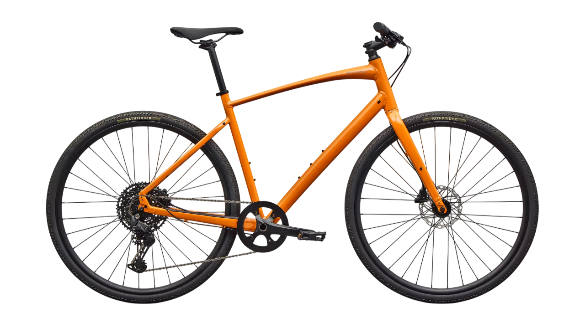
Trek FX (serie)
Línea híbrida de Trek pensada para fitness y commuting; modelos como el FX 3 ofrecen geometría relajada, ruedas de 700c y opciones con frenos de disco para mayor control urbano.
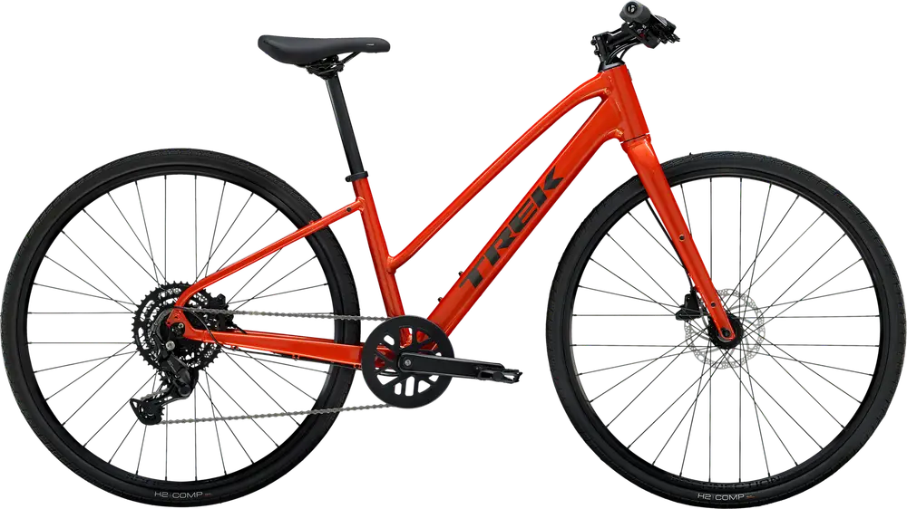
⚡ Bicicletas Eléctricas
Specialized Turbo Como 4.0
E-bike cómoda y práctica con motor Turbo Full Power, batería integrada de alta capacidad (710Wh en algunas versiones) y componentes orientados al uso urbano: guardabarros, luces y portabultos.
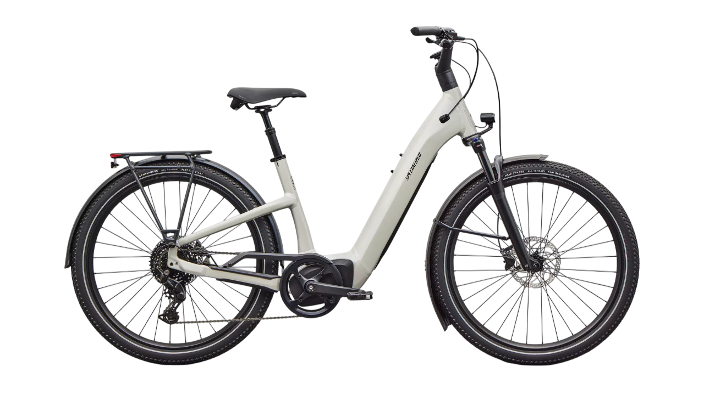
Specialized Turbo Vado 4.0
E-bike pensada para desplazamientos rápidos por ciudad y rutas de media distancia; combina motor potente, batería de buena autonomía y geometría cómoda para el día a día.
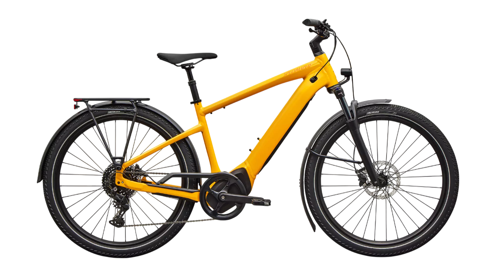
Giant E-Bikes (colección)
Giant ofrece una gama de e-bikes tanto urbanas como de fitness y montaña. Recomendable revisar modelos y disponibilidad en su web oficial en España.
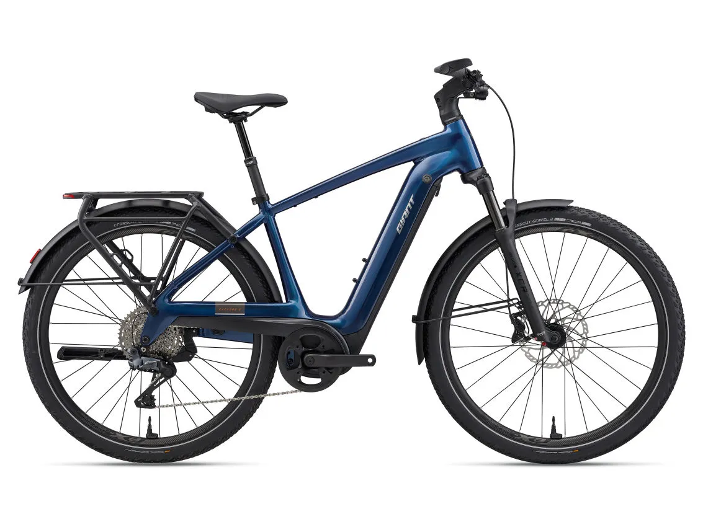
Cannondale (e-bikes y urbanas)
Cannondale dispone de modelos urbanos y e-bikes con buen compromiso entre peso y rendimiento. Consulta su tienda en España o distribuidores locales para modelos concretos y disponibilidad.
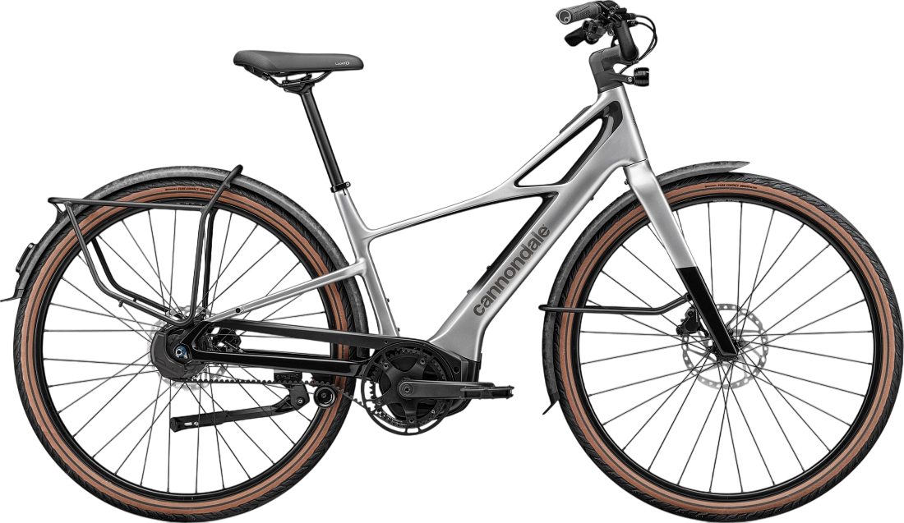
🔄 Bicicletas Híbridas
Specialized Sirrus X 3.0
Bicicleta híbrida/fitness muy versátil, con transmisión 1x, frenos hidráulicos y neumáticos de mayor volumen para confort en ciudad y pistas ligeras. Excelente compromiso entre confort y rendimiento.
Riverside 920
Bicicleta híbrida ligera pensada para rutas largas y commuting; cuadro de aleación, transmisión fiable y geometría cómoda. Buena opción como alternativa con disponibilidad en tiendas españolas.
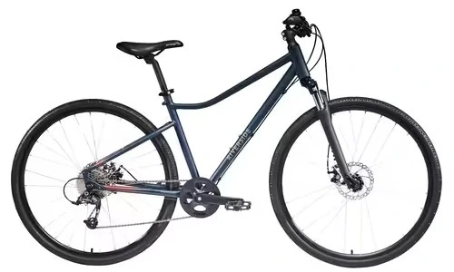
🎪 Bicicletas BMX
Mongoose Legion L500
BMX de 20" con componentes orientados al freestyle y saltos; disponible en distribuidores españoles online (Tradeinn/Bikeinn), buen equilibrio entre precio y prestaciones.
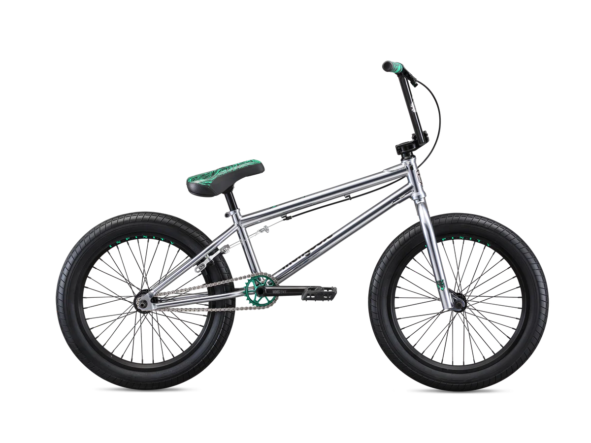
Haro / Catálogo BMX (Bikeinn)
Si buscas más opciones de BMX (tallas 16"/20"/24") revisa el catálogo de tiendas españolas como Bikeinn/Tradeinn donde encontrarás Haro, Mongoose y otras marcas disponibles en España.
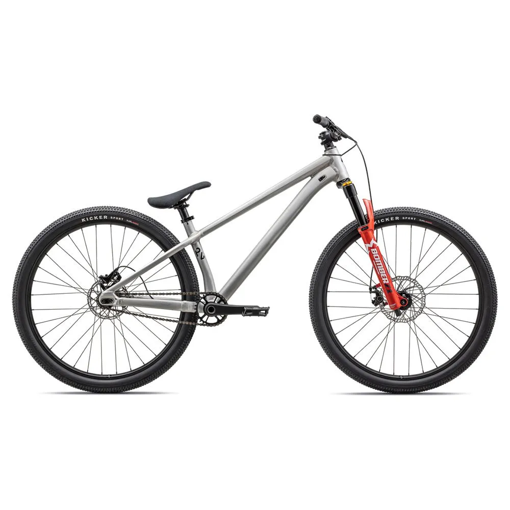